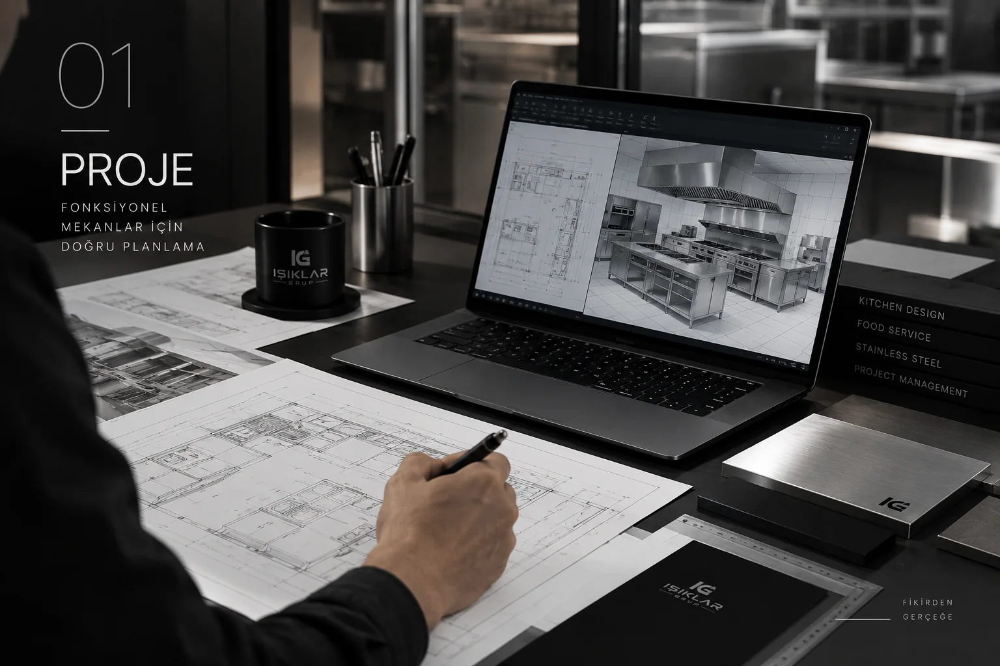
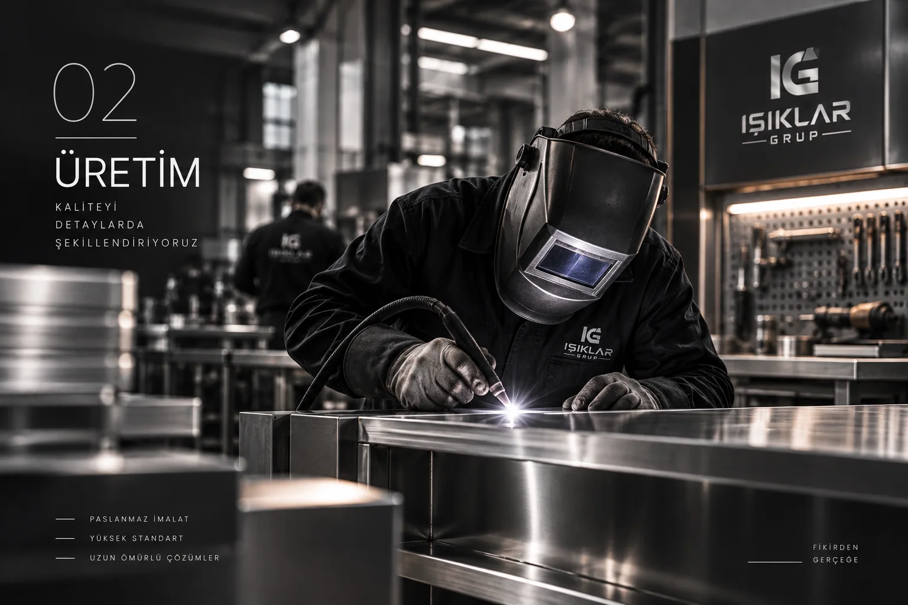
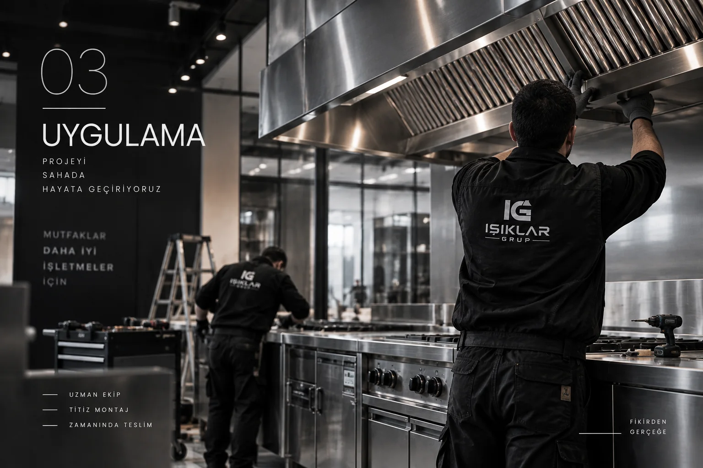

İlk çizgiden açılışa.
Yerleşim, ekipman, üretim ve montaj ihtiyaçlarını tek proje kapsamında ele alın.
Anahtar teslim projenizi anlatın →Endüstriyel mutfak, ticari soğutma, soğuk oda ve paslanmaz çelik uygulamalarında projeye özel, uçtan uca çözümler.
İŞLETMENİZ İÇİN DOĞRU BAŞLANGIÇ
Restoran, kafe, pastane, fırın ve profesyonel üretim alanları için ekipmanı, yerleşimi ve uygulamayı birlikte planlıyoruz.
Yerleşim, ekipman, üretim ve montaj ihtiyaçlarını tek proje kapsamında ele alın.
Anahtar teslim projenizi anlatın →Çalışma tezgâhı, hazırlık hattı ve paslanmaz detayları mekânınıza göre değerlendirelim.
Mutfak ihtiyacınızı paylaşın →Hazırlık, muhafaza ve teşhir alanlarınız için kullanımınıza uygun sistemleri inceleyin.
Soğutma çözümlerini keşfedin →Işıklar Grup; keşif, projelendirme, üretim ve montajı aynı ekip altında bir araya getirir. Böylece işletmenin operasyonu, hijyeni ve dayanıklılığı daha ilk çizgiden itibaren birlikte çözülür.
Kurumsal yapımız →



Keşiften projelendirmeye, üretimden montaja kadar tüm süreci tek noktadan yönetiyoruz.
Alan ve ihtiyaç analizi
Akış ve teknik çözüm
Projeye özel imalat
Saha uygulaması
Kontrol ve devreye alma
Türkiye genelinde ve 5 Avrupa ülkesinde proje deneyimi.
Referans ağı ↗FİRMANIZDA PAYLAŞIN
Hizmetlerimiz, seçili projelerimiz ve iletişim bilgilerimiz tek dosyada.
PROJEYE BAŞLAMADAN ÖNCE
İşletme türünüzü, proje konumunu, ihtiyaç duyduğunuz hizmeti ve hedef tarihinizi paylaşabilirsiniz. Varsa plan, ölçü ve mevcut alan fotoğraflarını WhatsApp görüşmesinde iletebilirsiniz.
Evet. Anahtar teslim projelerin yanında endüstriyel mutfak, ticari soğutma, soğuk oda ve projeye özel paslanmaz çelik uygulamaları için de iletişime geçebilirsiniz.
İhtiyaç ve keşif değerlendirmesini projelendirme, üretim, montaj ve teslim adımları izler. İşin kapsamı ve teknik gereksinimler proje bazında netleştirilir.
Evet. Türkiye genelinde ve Avrupa’da proje deneyimimiz bulunuyor. Projenizin konumunu ve kapsamını paylaşarak uygulama koşullarını bizimle değerlendirebilirsiniz.